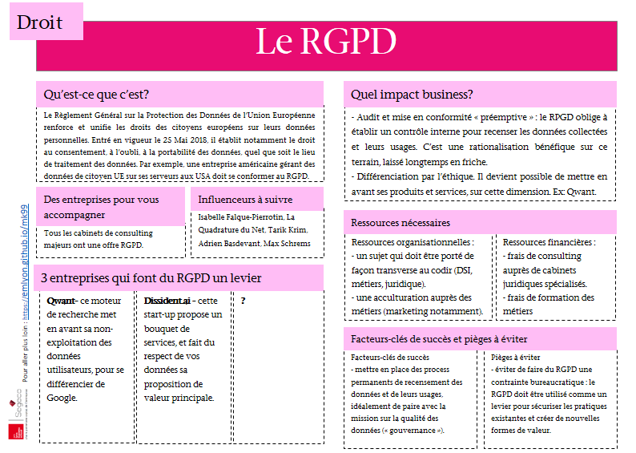
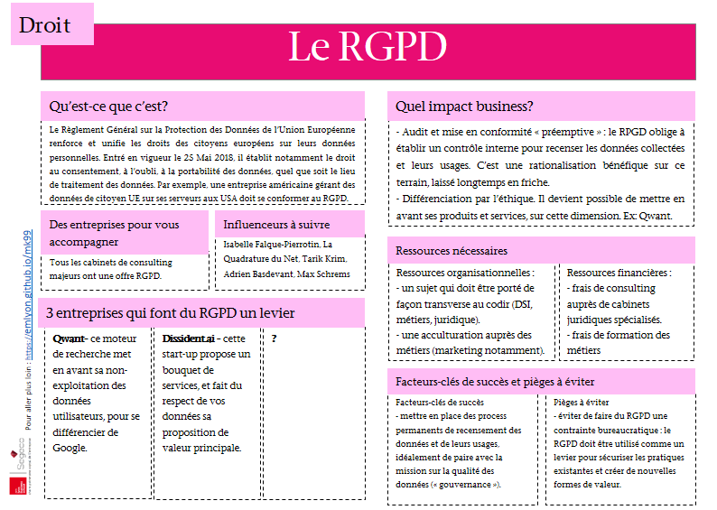

Cette Chaire est pilotée par Clément Levallois, professeur associé à emlyon business school.
Documents utiles : une série de 10 cartes mémos sur les technos liées aux données en entreprise


 



Téléchargez les cartes au format Powerpoint
Téléchargez les cartes au format Word